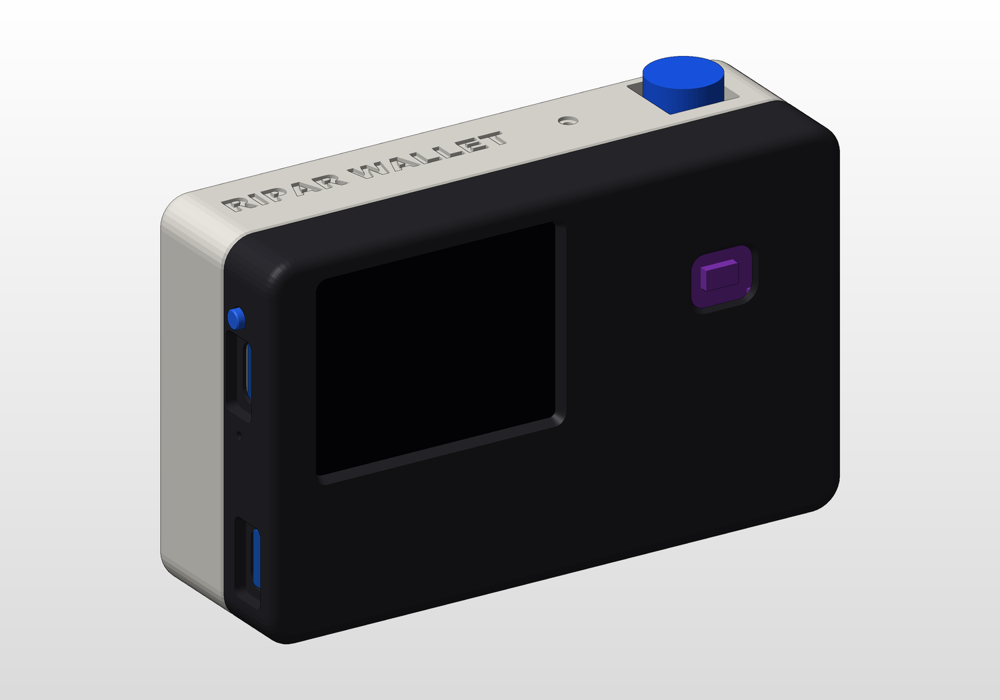
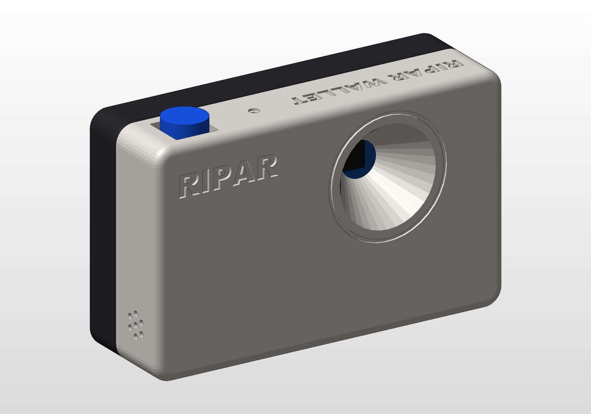
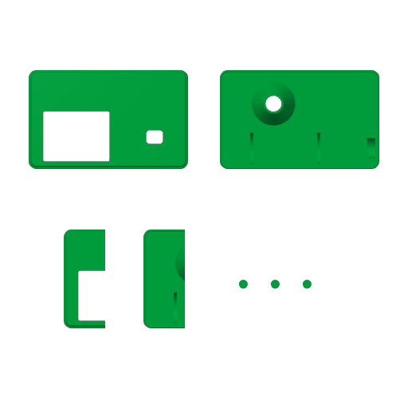
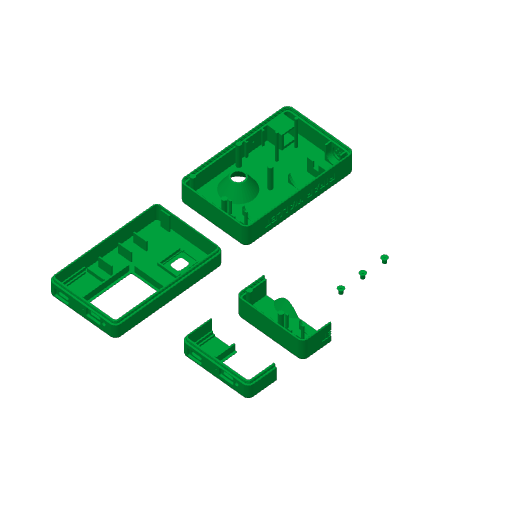
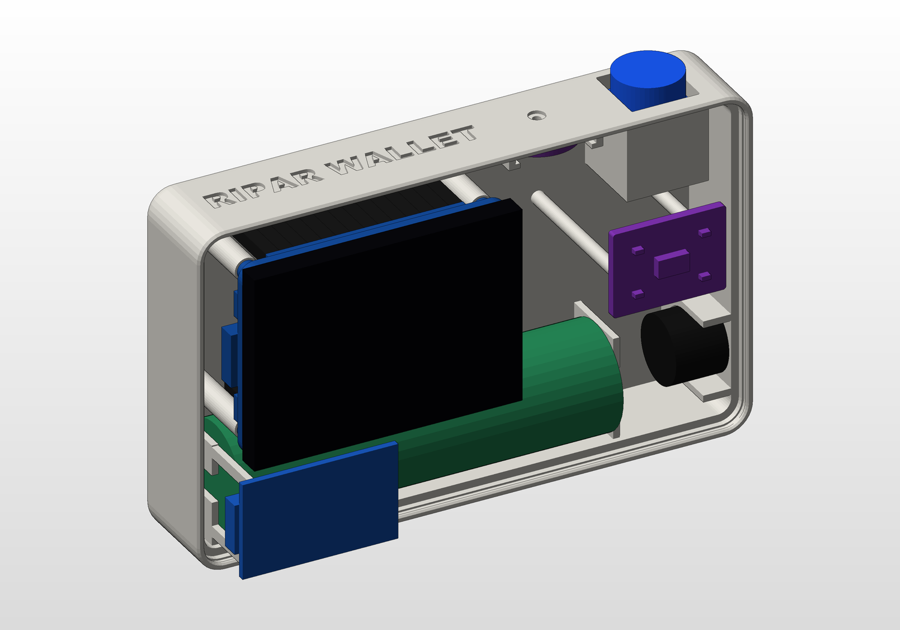
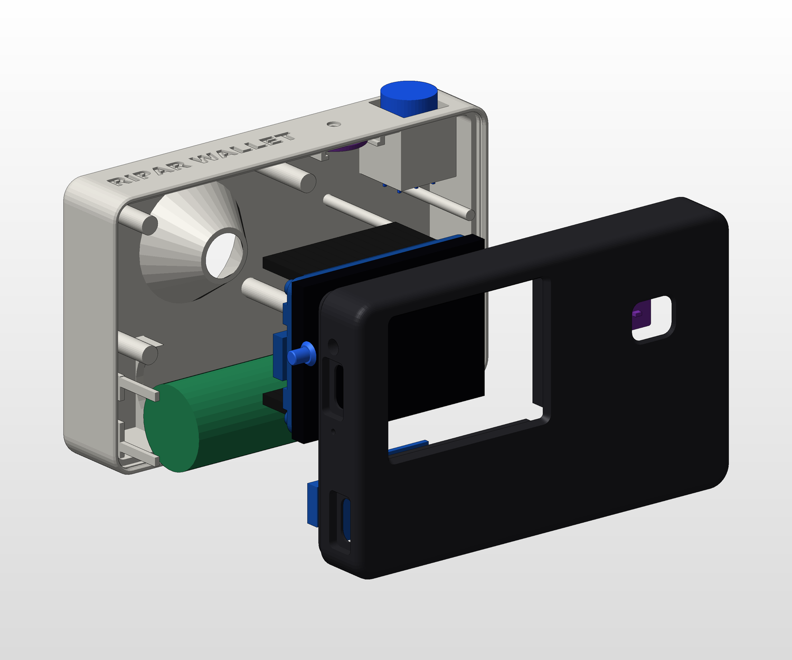

Ripar is a pocket-camera-shaped signer that never touches the internet. The keys stay inside it and it has no Wi-Fi or Bluetooth. Everything goes in and out as QR codes:
| Part | Job | Notes |
|---|---|---|
| Waveshare ESP32-S3-LCD-2 | Brain + 2-inch screen | ESP32-S3R8, 8 MB PSRAM, 16 MB flash, 240×320 display (used landscape) |
| OV5640 camera | QR scanner | Already plugged into the board's camera connector |
| MAX30102 | Pulse sensor under the thumb | I2C, 4 wires |
| 18650 Li-ion cell, 3.7 V 2000 mAh | Battery | Single cell only; up to 19.3 mm thick with tape and wires |
| TP4056 USB-C charger (with protection) | Charge-only port | Pads B+ B− OUT+ OUT− |
| 12×12 mm latching push switch + blue cap | Power ON/OFF | Goes in from outside, through the square hole on top |
| 12 mm buzzer | Beeps (frame read, pulse OK, signed) | GPIO18 |
| INMP441 microphone | Later (camera version) | Mounted in the case but not wired for the wallet |
| Printed parts | Case | Front shell, back shell, 3× SIGN pin, 2 fit-test coupons (all on one plate) |
| Consumables | Female-to-female jumper wires, solder, heat-shrink or electrical tape |
| Item | Value |
|---|---|
| Size | 100 × 62 × 32 mm, landscape and camera-shaped |
| Closing | No screws. A 1.26 mm lip on the front shell clicks into a groove in the back shell (0.25 mm snap bead). A fingernail notch on the bottom seam opens it. |
| Board mounting | Screen glass against the window. The top and left walls plus two fences locate the board, and four flat pegs press on its M2 nuts when you close the case. |
| Cradles | 18650 saddles, TP4056 cradle, switch cradle, pulse-sensor pocket (0.7 mm skin, 10×8 mm thumb window), mic rails, buzzer cradle |
| Camera | 33° lens hood; even the full 68° field of view isn't clipped |
| Lettering | “RIPAR WALLET” on the top and bottom, “RIPAR” on the lens face |
| Checks | SolidWorks interference detection found 0 unexpected collisions. All STLs are watertight, and three independent design reviews were applied. |
print/bambu/RiparWallet_ALL_P1S.gcode.3mf. It has every part on one plate and is already sliced: about 2 h 23 min, 69.5 g of PLA. Open it in Bambu Studio and press Print plate, or copy it to the printer's microSD card.

| Setting | Value | Why |
|---|---|---|
| Printer / nozzle | Bambu Lab P1S, 0.4 mm | |
| Filament | Bambu PLA Basic (PETG also fits) | Use black or dark for both shells. A dark case hides light leaks around the pulse sensor, and a light-coloured lens hood flares the camera. |
| Layer height | 0.16 mm | Crisp lettering and an accurate snap bead |
| Walls / infill | 3 walls, 15 % gyroid | Stiff walls for the snap-fit |
| Plate | Textured PEI | Change it in Bambu Studio and re-slice if you use another plate |
| Supports | Off | Every part was designed to print without them |
| Brim | Auto | Only the tiny SIGN pins get one |
| Orientation | Front shell screen-face down, back shell lens-face down | Already set in the file |
These are the left 26 mm of each shell: the end with the USB-C ports, SIGN pin, board corner and snap lip. They let you check the fit with little plastic.
| Part | Designed for | Setting in cad/design.py |
|---|---|---|
| Big latching switch | 12×12 mm body, housing ≤ 12 mm tall, cap ≤ Ø12 mm | SW, SW_CRADLE_CLR |
| MAX30102 board | Up to 20.3 × 15.3 mm, header soldered on the back | MAX |
| 18650 | Up to 19.3 mm thick with tape, ≤ 69.5 mm long with tabs | BAT_D, BAT_L |
| TP4056 | 28 × 17.3 mm, 1.0–1.6 mm PCB | TP |
| USB-C cables | Plug overmold ≤ about 12.6 × 6.8 mm | USB_RECESS |
| Symptom | Fix in cad/design.py, then run python cad/make_all.py |
|---|---|
| Lid won't stay closed | BEAD +0.1 |
| Lid too hard to close | BEAD −0.1 or LIP_CLR +0.05 |
| Seam stays open by a hair with the board fitted | PEG_GAP 0.1 → 0.2 |
| Board loose in the window | FENCE_CLR 0.2 → 0.1 |
| USB-C cable doesn't seat | USB_RECESS depth 2.0 → 2.2 |
| Switch tight or rubbing | SW_CRADLE_CLR +0.1 |
The rebuild takes about 15–20 min. It regenerates the SolidWorks parts, runs the interference check and re-slices for the P1S automatically.
You need only 4 wires for the pulse sensor, 2 for the buzzer, and a short power chain. The camera is already plugged in. The SIGN key needs no wire, because the printed pin presses the board's BOOT button.
Turn the board over so the header pins point at you, with the USB-C at the bottom. Every pin is labelled on the board.
| # | Left row (P1), top to bottom | Right row (P2), top to bottom |
|---|---|---|
| 1–7 | 2, 4, 6, 16, 17, 18, 21 | 3V3, G, TX (43), RX (44), 47, 48, 15 |
| 8–14 | 8, 7, 10, 20, 19, G, 5V | 13, 11, 12, 14, 9, G, VBAT |
With the camera plugged in, it uses GPIO 2, 4, 6, 7, 8, 9, 10, 11, 12, 13, 14, 15, 16, 17 and 21. GPIO 19 and 20 are USB. The only free pins are 18, 43 and 44, plus the I2C pair 47/48, which the pulse sensor shares with the board's motion sensor.
| Sensor pin | Board pin | Wire |
|---|---|---|
| VIN | 3V3 (right row, 1st) | red |
| GND | G (right row, 2nd) | black |
| SCL | 47 (right row, 5th) | any colour |
| SDA | 48 (right row, 6th) | any colour |
| Buzzer | Board pin |
|---|---|
| Long leg (+) | 18 (left row, 6th) |
| Short leg (−) | G (left row, 13th) |
A small 3.3 V active buzzer can go straight onto the pin. A 5 V or magnetic buzzer needs an S8050 transistor with a 1 kΩ base resistor and a 1N4148 across the buzzer. If yours is a 3-pin module (VCC/GND/I/O), it needs a split 3V3 wire.


| Test | How | Expected |
|---|---|---|
| 1. Board only | Plug the board's USB-C (upper port on the left end) into your PC | The screen lights up once the firmware is flashed (chapter 6) |
| 2. Battery | Unplug USB and click the big button ON | The board runs from the battery; click again to turn it off |
| 3. Charging | USB-C into the lower port (the TP4056) | Red LED while charging, blue or green when full. It charges even when switched off. |
| 4. Pulse | Rest your thumb on the pad | The heart animation beats and bpm settles within about 8 s |
| 5. SIGN pin | On Home, press the pin on the left end | Click; the camera viewfinder opens. Hold 2 s to cancel. |
| 6. Camera | Start a scan and point the lens at a QR code | The viewfinder shows the code and a progress bar |
firmware/ builds cleanly: RAM 11.7 %, flash 11.0 %, and firmware.bin is about 720 KB. It passes 9 host test suites (11,777 checks), checked against an independent Python reference. There is no Wi-Fi or Bluetooth code in the binary. It has not run on a real board yet, so the first flash is also the first hardware test.The key has three actions: press (let go within 1 s), hold 2 s and hold 5 s. A press or hold only works on the screen where it started, so a hold that cancels a screen can never become a PANIC or a deny on the next one.
| Screen | Press | Hold 2 s | Hold 5 s |
|---|---|---|---|
| Home | Scan a request | Open the Hold screen | (only from the Hold screen) |
| Hold | Let go before 5 s to show the pairing QR | PANIC: signed at once, no pulse, because it can only tighten | |
| Scan | Cancel | ||
| Review | Next page. On the last page: continue to Pulse (or sign a deny) | Co-sign review: DENY. Other reviews: cancel | |
| Pulse | Ignored | Cancel | |
| Armed (“PULSE OK - press SIGN”) | SIGN | Cancel | |
| Signed QR / message | Home | Home | |
| Pairing QR | Home | Device menu | |
| Device menu | Next item | Select: REVOKE last mandate / REOPEN agent lane / BACK |
The review shows up to 9 rows at a time and each press moves 8 rows, so every row is seen. Every screen goes back to Home after 120 s with no key press. The buzzer ticks for each QR part and each heartbeat. A rising tone means OK; a falling tone means refused.
| Request (QR in) | Device shows | Reply (QR out) |
|---|---|---|
ripar-pair-req | The chain and every contract to pin, with a red CHANGES line for anything different | ripar-pair: both keys bound together |
ripar-mandate-req | Every rule in plain language. It refuses unknown rules and mandates without the pulse co-sign. | eth-signature from K1 |
ripar-cosign-req | Amount and token, full payee with a 4-icon fingerprint and NEW PAYEE, expiry (UTC), budget, risk and AI notes | ripar-cosign: P1 signature plus pulse evidence |
ripar-deny-req | The agent and the request | ripar-deny |
ripar-privy-req | The allowed Privy change, shown in full | ripar-der-sig |
firmware folder, run pio run -e ripar -t upload.pio device monitor -b 115200 shows the self-test and the K1 address.pio run -t erase wipes the seed, which means a new vault owner, and there is no seed backup yet. Only erase a unit that holds no funds.These tools run on the online PC. It is untrusted, which is why the device checks every signed reply itself.
firmware/tools/make_request.py builds requests and verifies the device's signed replies.firmware/tools/companion_lite.html plays requests as QR codes.python tools/make_request.py build pair chainId=10143 .... docs/FIRMWARE.md section 6 gives every command.companion_lite.html, paste the request and press Show QR.python tools/make_request.py simulate @req.txt plays a demo device, so you can test your requests and verify commands.RIPAR_LCD_ROTATION), the camera orientation and exposure, and the pulse thresholds.src/enforcers.cpp and src/tokens.cpp. Until then, the device trusts the contracts you confirm on screen at the first pairing.The full guide is docs/FIRMWARE.md, and the byte-level message format is docs/PROTOCOL.md.
| Item | Detail |
|---|---|
| Deadline | Wed 14 Oct 2026, 03:59 UTC (Tue 13 Oct, 23:59 ET; Wed 14 Oct, 09:29 IST). Aim to submit a complete draft on 12 Oct. |
| Track | 04: Trust, Identity & AI Infrastructure |
| Pitch | A camera-shaped, air-gapped signer that puts a live human thumb between AI agents and your money. Agents spend inside a mandate; anything more needs your heartbeat, checked on Monad. |
| On-chain piece | A PulseCosignEnforcer caveat for MetaMask delegations. Small, pre-approved spends go through automatically. New payees, larger amounts, or anything after the risk sentinel trips need Ripar's P-256 co-signature, which Monad verifies natively. |
| Sponsor integrations planned | Qwen (the treasury agent), Privy (server wallet owned by the device key), Nansen (payee risk), Mera (encrypted agent memory), Chainlink CRE (risk sentinel), Envio (trust dashboard), Alchemy (RPC and webhooks) |
| Submission needs | A working product, a public project page with a demo video (≤ 3 min), a short write-up and a link to the code (with a LICENSE) |
| Path | What |
|---|---|
print/bambu/RiparWallet_ALL_P1S.gcode.3mf | Ready-to-print P1S plate (everything on one plate) |
print/stl/, print/step/ | Print-oriented STLs and STEP files of every part, plus the full assembly |
print/PRINTING.md | Print and assembly guide (text version) |
docs/WIRING.md | Wiring (text version) |
docs/PROTOCOL.md | Device ↔ companion ↔ contract protocol |
docs/FIRMWARE.md | Firmware: build, flash, screens and keys, walkthrough, security model |
firmware/ | ESP32-S3 firmware (PlatformIO): src/, include/, host tests in test/host/, companion tools in tools/ |
model/RiparWallet.SLDASM, model/parts/ | SolidWorks 2026 assembly and native parts |
cad/design.py | Every enclosure dimension in one file |
cad/make_all.py | One command to rebuild the parts, assembly, checks, exports, P1S slice and renders |
research/ | CAD design reviews and researched part dimensions |